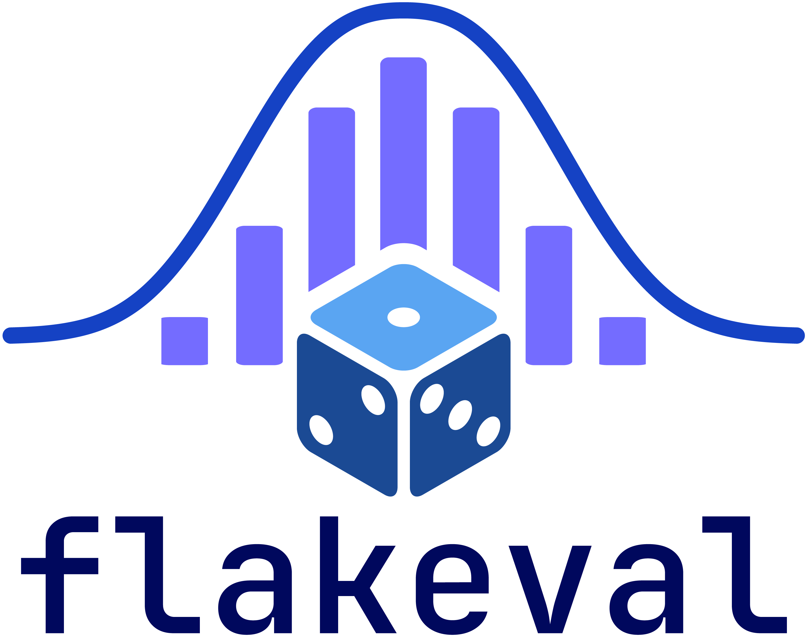

Is your AI improvement real, or just luck?
(Say it "flake-eval": flaky + evaluation.)
You change something (a prompt, a model, a setting). Your test score goes from 72% to 74%. Did it really get better, or would you get 74% just by running the same test again? flakeval answers that question with a plain verdict.
- Works on results you already have (a simple JSONL file), or runs your evaluation function repeatedly for you.
- Gives a verdict, a range for the true difference, and the smallest difference your test can reliably detect.
- Tells you whether you need more runs or more test questions to reach a clear answer.
- Exits with an error on a real regression, so it works as an automatic check in CI.
- One dependency (numpy). Runs even on a laptop.
Contents
- Flakeval in plain English
- Quick start
- Use it with your own models and data (the template)
- The two case studies, as template settings files
- Results
- Use it on your own evals
- FAQ
- How it works
- Limitations
- Repository layout
- Roadmap
Flakeval in plain English
The problem
If you flip a coin 10 times you might get 6 heads. Flip it 10 more times and you might get 4. Nobody concludes the coin changed. It is just chance.
AI tests behave the same way. Language models pick words with some randomness, so running the same test twice can give different scores. On top of that, your test only has a limited number of questions, so a different set of questions would give yet another score. Together this random wobble is called noise.
If you change a prompt and the score moves by 2 points, that could be a real improvement, or it could be noise. flakeval measures how big the noise is, so you can tell which it is and how much to trust the answer. (Isn't it all just chance anyway? See the FAQ.)
Words used in this project
| Word | Meaning |
|---|---|
| Item | One test question. |
| Run | One complete pass of the model over all items. We repeat runs to see how much the score wobbles. |
| Score | How well the model did (for example, the share of questions answered correctly). A "point" is one percentage point. |
| Noise | Random wobble in scores that has nothing to do with real quality. |
| A/A test | Comparing a system with itself. The right answer is "no difference", so it checks that the tool does not invent differences. |
| 95% range (confidence interval) | The range the true difference most likely lies in. If it includes 0, the real difference might be nothing. |
| p-value | How surprising your result would be if nothing had really changed. Small (under 0.05) means surprising, so probably real. Large means it could easily be chance. |
| Within noise | "This test cannot tell whether anything changed." It does not mean the two systems are equal. |
| Smallest detectable difference | The smallest gap this test could reliably spot. If you care about a 2-point improvement but this number is 6, your test is too small to find it. |
| Flaky item | A question the model gets right in some runs and wrong in others. |
What the verdicts mean, and what to do
| Verdict | What it means | What to do |
|---|---|---|
| REAL IMPROVEMENT | B scored higher, and chance alone is an unlikely explanation. | You can trust the improvement. |
| REAL REGRESSION | B scored lower, and chance alone is an unlikely explanation. | Do not ship B without investigating. |
| WITHIN NOISE | The test cannot tell. A gap may exist, but it is too small for this test to see. | Do not claim a win or a loss. Read the advice line: add more runs if run-to-run noise dominates, or more questions if the question set dominates. |
| IDENTICAL RESULTS | A and B scored exactly the same on every item. | Check that the setting you changed actually reached the model. |
How to use it on your own project
- Run your test 3 to 5 times per system (more runs for noisier tasks), saving each item's score for each run.
- Run
flakeval compare a.jsonl b.jsonl. - Read the verdict, and look at the smallest detectable difference. If it is bigger than the improvement you care about, your test is too small to prove it; add questions or runs.
Want flakeval to run your models for you instead? flakeval init creates a ready-to-edit settings file (details).
An example (simulated data, where system B is truly about 2 points better than A, with 200 items and 5 runs each):
$ flakeval compare a.jsonl b.jsonl
A: 0.6800 (5 runs) B: 0.6860 (5 runs) items: 200
delta (B - A): +0.0060 95% CI: [-0.0310, +0.0430] p = 0.7955
smallest reliably detectable difference: ~0.0535
VERDICT: WITHIN NOISE
Most uncertainty is run-to-run noise (100%). Running each item more times will tighten the interval. ...
Reading it: B scored 0.6 points higher, but the true difference could be anywhere from 3.1 points worse to 4.3 points better. This test could only reliably spot gaps of about 5 points, so the 2-point improvement is invisible to it.
Quick start
Requires Python 3.10+. Pick the route that fits:
- Option 1: install from PyPI to test your own models, prompts and data. This is what most people want.
- Option 2: clone the repository to run the tests, the simulated demo and the two case studies (these are not part of the PyPI package).
Option 1: install from PyPI and use it on your own data
1. Install.
python -m venv .venv
source .venv/bin/activate # Linux / macOS
source .venv/Scripts/activate # Windows Git Bash
# .venv\Scripts\Activate.ps1 # Windows PowerShell
pip install flakeval
flakeval --help # lists the commands: report, compare, init
2. Create your settings file. In the folder where you want to work:
flakeval init # creates my_eval.py (your settings) and sample_data.csv
my_eval.py holds only your settings, about 100 lines, mostly comments. The code that loads your data, calls the models, scores the answers and writes the report lives in the package, so a new release reaches you with pip install -U flakeval and you never copy code into your file. flakeval init never overwrites an existing file.
3. Put your data in a CSV (or JSONL), one row per question: an id, the text to send to the model, and the answer you expect. For example tickets.csv:
id,ticket,label
1,I was charged twice this month,billing
2,The app crashes when I open settings,bug
3,How do I export my data?,question
4. Edit the settings. Open my_eval.py and change the settings at the top. Here is a worked example for the question "does my new prompt beat my current one?", using the same model with two different prompts. The first system is the baseline; every other system is compared against it.
DATA_PATH = "tickets.csv"
INPUT_COLUMN = "ticket" # the text sent to the model
EXPECTED_COLUMN = "label" # the correct answer
ID_COLUMN = "id"
SCORER = "exact" # the answer must equal the label (ignores case and trailing punctuation)
SYSTEMS = [
{
"name": "current_prompt",
"model": "qwen2.5:3b",
"base_url": "http://localhost:11434/v1", # Ollama; any OpenAI-compatible server works
"api_key_env": None,
"temperature": 0.7,
"system_prompt": "",
"prompt_template": "Classify this support ticket as billing, bug or question. Answer with one word.\n\nTicket: {input}",
},
{
"name": "new_prompt",
"model": "qwen2.5:3b",
"base_url": "http://localhost:11434/v1",
"api_key_env": None,
"temperature": 0.7,
"system_prompt": "",
"prompt_template": "You are a support triage assistant. Read the ticket and reply with exactly one label: billing, bug or question.\n\nTicket: {input}",
},
]
RUNS = 5 # times each question is asked per system (3 to 5 is a good range)
MAX_TOKENS = 20 # a one-word answer needs very little room
{input} is replaced by the text of the INPUT_COLUMN for each row. To compare two models instead, give the two systems different model values and the same prompt. The other settings, and the full list of built-in scorers (exact, contains, number, choice_letter, answer_line, final_number, or your own function), are explained in Use it with your own models and data.
5. Check your setup, then run.
python my_eval.py --dry-run # asks 2 questions per system, prints each answer and its score; saves nothing
python my_eval.py # the real run: shows the number of model calls and asks before it starts
Read the --dry-run output before the real run: it shows exactly what was sent, what came back and how it was scored, so you can catch a scorer that marks good answers wrong. For a cheap rehearsal of the real run, add --max-items 10 --runs 2 --out-dir trial. The real run asks every question RUNS times for each system, plus a repeat of the baseline as a built-in sanity check (so the example above makes 3 system runs). A progress bar shows how far along it is. If you see Is the server running?, start your model server or check base_url.
6. Read the result. The report is printed at the end and saved to my_results/report.txt, next to the scores and the raw model answers (<system>.outputs.jsonl). Each comparison ends with a verdict: REAL IMPROVEMENT, REAL REGRESSION, WITHIN NOISE ("this test cannot tell"), or IDENTICAL RESULTS. A small test set often returns WITHIN NOISE even when one prompt is truly better; the report's "smallest reliably detectable difference" tells you how big the gap must be before the test can see it, and whether more runs or more questions would help. Flakeval in plain English explains how to read every line. If you fix your scorer, python my_eval.py --rescore re-marks the saved answers without calling any model.
Variations
A hosted model (any OpenAI-compatible API): use the provider's address, and put the name of the environment variable that holds your key in
api_key_env. Never paste the key into the file.{ "name": "hosted_model", "model": "the-model-name-your-provider-gives-you", "base_url": "https://api.your-provider.com/v1", # from your provider's documentation "api_key_env": "MY_API_KEY", "temperature": 0.7, "system_prompt": "", "prompt_template": "{input}", },export MY_API_KEY="..." # Linux / macOS / Git Bash # $env:MY_API_KEY = "..." # Windows PowerShellSet
WORKERS = 8to send requests in parallel, and start with--max-items 10 --runs 2so you can check the cost first. flakeval prints the number of calls and asks before spending anything. For a model that is not behind an OpenAI-compatible API, a system can instead use your own Python function ("call": my_function); the settings file contains a worked example.No settings file, only Python:
from flakeval.study import default_config, run_study cfg = default_config() cfg.update( data_path="tickets.csv", input_column="ticket", expected_column="label", id_column="id", scorer="exact", runs=5, max_tokens=20, systems=[ {"name": "current", "model": "qwen2.5:3b", "base_url": "http://localhost:11434/v1", "prompt_template": "Classify this support ticket as billing, bug or question. Answer with one word.\n\nTicket: {input}"}, {"name": "new", "model": "qwen2.5:3b", "base_url": "http://localhost:11434/v1", "prompt_template": "You are a support triage assistant. Reply with exactly one label: billing, bug or question.\n\nTicket: {input}"}, ], ) run_study(cfg) # asks for confirmation first; run_study(cfg, yes=True) skips itYou already have scores from your own eval harness: write one JSON line per question per run, then compare two files. Use at least 3 runs per question, and the same ids in both files.
{"item_id": "q17", "run": 2, "score": 1.0}flakeval report a.jsonl # how noisy is one system? flakeval compare a.jsonl b.jsonl # is B really different from A?See Use it on your own evals for details.
Option 2: clone the repository (tests, demo, case studies)
git clone https://github.com/AnchitGupta22/flakeval && cd flakeval
python -m venv .venv
source .venv/bin/activate # Linux / macOS
source .venv/Scripts/activate # Windows Git Bash
# .venv\Scripts\Activate.ps1 # Windows PowerShell
pip install -e ".[dev,examples]"
python -m pytest # all tests should pass
Try it on simulated data (no GPU, no downloads):
cd examples
python make_demo.py # writes a.jsonl and b.jsonl
flakeval report a.jsonl
flakeval compare a.jsonl b.jsonl
The two case studies (ARC and GSM8K) are in examples/template_case_studies/; see The two case studies, as template settings files.
If flakeval is not found, call it through Python instead: python -m flakeval.cli compare a.jsonl b.jsonl.
Use it with your own models and data (the template)
You do not need to write code to test your own data. Create a settings file, fill in a few settings, and run it.
flakeval init # creates my_eval.py (your settings file) and sample_data.csv in this folder
python my_eval.py --dry-run # tries 2 questions per system and prints what happened; saves nothing
python my_eval.py # the real run (shows the number of model calls and asks first)
flakeval init works from a plain pip install, with nothing to download from GitHub. It never overwrites an existing file (use another name for a second evaluation: flakeval init other_eval.py).
How the pieces fit together. my_eval.py holds only your settings (about 100 lines, mostly comments). The machinery that loads your data, calls the models, scores the answers, shows the progress bar and writes the report lives in the package as flakeval.study. That means a fix or improvement reaches you with pip install -U flakeval, and you never have to copy new code into your file. If you prefer to stay in Python code instead of a settings file:
from flakeval.study import default_config, run_study
cfg = default_config()
cfg.update(data_path="my_questions.csv", input_column="question", expected_column="answer",
systems=[{"name": "a", "model": "qwen2.5:3b", "base_url": "http://localhost:11434/v1"},
{"name": "b", "model": "llama3.2:3b", "base_url": "http://localhost:11434/v1"}])
run_study(cfg) # asks for confirmation first; run_study(cfg, yes=True) to skip
What you fill in (all in one block at the top of the file):
| Setting | What to put there |
|---|---|
DATA_PATH |
Path to your .csv (with a header row) or .jsonl file |
INPUT_COLUMN |
The column with the text sent to the model |
EXPECTED_COLUMN |
The column with the correct answer (or None if your scorer does not need one) |
ID_COLUMN |
A unique id per row (or None to use the row number) |
MAX_ITEMS |
Use only a random subset of this many rows (None = all). Aim for 100 or more if you can. |
SCORER |
How to mark an answer: one of the built-in scorers below, or "custom" (your own small function) |
SYSTEMS |
The things you are comparing. The first is the baseline. Each has a name, a model, an endpoint, a temperature and a prompt. |
RUNS |
How many times each question is asked per system (3 to 5 is a good range) |
Built-in scorers (each gives 1 for a good answer and 0 for a bad one):
SCORER |
An answer counts as correct when... |
|---|---|
"exact" |
it equals the expected text (ignoring case, spaces and trailing punctuation) |
"contains" |
the expected text appears somewhere in it |
"number" |
the last number in it equals the expected number |
"choice_letter" |
multiple choice: the first standalone capital letter A-H in it is the expected letter |
"answer_line" |
math, strict: the number after the last Answer: in it equals the expected number |
"final_number" |
math, lenient: like answer_line, but also accepts \boxed{...} and then the last number |
"custom" |
your own function custom_score(output, expected, row) returns it (anything from 0 to 1) |
A misspelled scorer name stops the run immediately and lists the valid ones, before any model is called.
Try something small without editing the file. Every settings file understands these command-line overrides:
--max-items 10 (a random subset), --runs 2, --workers 4, --out-dir results_trial, and --scorer NAME.
For example, python my_eval.py --max-items 10 --runs 2 --out-dir trial is a cheap rehearsal of the real run.
A data file can be as simple as this:
id,question,answer
1,What is the capital of France? Answer in one word.,Paris
2,What is 7 times 8? Answer with just the number.,56
Comparing two prompts on the same model is just two systems with the same model and different prompt_template
({input} stands for the question):
SYSTEMS = [
{"name": "current_prompt", "model": "qwen2.5:3b", "base_url": "http://localhost:11434/v1",
"api_key_env": None, "temperature": 0.7, "system_prompt": "", "prompt_template": "{input}"},
{"name": "new_prompt", "model": "qwen2.5:3b", "base_url": "http://localhost:11434/v1",
"api_key_env": None, "temperature": 0.7, "system_prompt": "",
"prompt_template": "{input}\n\nDouble-check your work before answering."},
]
Which models can it talk to?
- Anything with an OpenAI-compatible chat endpoint: local servers such as Ollama, LM Studio and vLLM, and many hosted providers. Fill in
base_urlandmodel, and for hosted services put the name of the environment variable that holds your API key inapi_key_env(set it in your terminal first; never paste a key into the file). - Anything else (another company's SDK, a model loaded in Python, your own pipeline): write a short function that takes the prompt and returns the answer as text, and give it to a system as
"call": my_function. The template contains a worked example.
What you see while it runs: one progress bar for the whole run, counting model calls, with the system currently running next to it and an estimated time left:
[████████░░░░░░░░░░░░] 41% 740/1800 calls | model_b (system 2/3) 140/600 | elapsed 0:11:02 | ETA ~0:15:40
The estimate is rough, because systems can run at different speeds. When a system finishes, its average score is printed above the bar. If the output goes to a file or pipe (for example | tee run.log), it prints a plain line every 10% instead, so the log stays readable.
What you get: a printed report and a my_results/ folder with the scores for each system, the raw model answers (handy for checking that your scorer is fair), and report.txt. With RUN_A_A_TEST = True (the default) the baseline is also run a second time, so you can see how much two identical runs differ by pure chance. That number is the yardstick for judging every other difference.
Read some raw answers before you trust the numbers. A scorer can mark good answers wrong, and that looks exactly like model noise. In our own test, a correct answer written as H₂O was marked wrong against the expected H2O, which made one question look "flaky". Open my_results/<system>.outputs.jsonl and look at a few answers that scored 0. The built-in scorers already treat look-alike characters (such as ₂ and 2) as equal. If you fix or change your scorer, you do not need to ask the model again: python my_eval.py --rescore re-marks the saved answers and rebuilds the report without calling any model (it needs SAVE_OUTPUTS = True, the default, and the same data and system names as the original run).
Your data stays yours. flakeval never uploads anything. Your rows go only to the endpoints you list. With a local model, nothing leaves your computer. If the data is confidential, add my_results/ to .gitignore, because the saved raw answers can contain it.
Cost safety. Before the real run the script prints the total number of model calls (questions x runs x systems) and asks you to confirm. It skips systems whose result file already exists, so rerunning never repeats paid calls, and it stops with a clear error instead of recording fake zeros if the server fails. Start with a small MAX_ITEMS if you pay per call.
No single correct answer (summaries, chat replies)? Use SCORER = "custom" and write a function that returns a number from 0 to 1. Be aware that if the score comes from another AI model acting as a judge, that judge adds its own randomness, which this version of flakeval does not model separately (see Limitations).
The two case studies, as template settings files
The two case studies ship as ordinary settings files, in the same format that flakeval init gives you. Read them as worked examples of adapting the template to a real dataset: each is about 60 lines, imports only flakeval.study, and uses a built-in scorer. What you see is exactly what you would write for your own data.
What they test. Single-letter multiple-choice answers from a confident model tend to be very stable, so the first study barely exercises the tool: it shows flakeval staying quiet when nothing changed and flagging a large gap. Real applications produce long, free-form answers, which is where run-to-run noise matters, so the second study uses step-by-step reasoning. Each study makes three comparisons: the same system twice (the A/A check), two different models, and a subtle change (a low temperature for ARC, a one-sentence prompt tweak for GSM8K).
arc_eval.py (case study 1) |
gsm8k_eval.py (case study 2) |
|
|---|---|---|
| Questions | 200 ARC-Challenge science multiple-choice questions | 200 GSM8K math word problems |
| Systems compared | qwen2.5:3b (temperature 1.0) vs llama3.2:3b vs qwen2.5:3b at temperature 0.3, plus the A/A check |
qwen2.5:3b vs llama3.2:3b vs qwen2.5:3b with the "double-check" prompt, plus the A/A check |
| Runs per question | 5 | 3 |
| Longest answer | 16 tokens | 800 tokens |
| Model calls | 4,000 | 2,400 |
SCORER |
"choice_letter" |
"answer_line" (strict) or "final_number" (lenient) |
| Results folder | results_template_arc/ |
results_template_gsm8k_strict/ and results_template_gsm8k_lenient/ |
Requirements. Ollama installed and running, with the two models pulled
(ollama pull qwen2.5:3b and ollama pull llama3.2:3b), and pip install -e ".[examples]" (adds the datasets package, used only to export the questions). A GPU with 8 GB of memory is enough for these 3B models (developed on an RTX 4060 laptop GPU); CPU-only works but is slow. The export needs internet once.
Run them.
python examples/template_case_studies/prepare_data.py # once: exports the questions as CSV files
python examples/template_case_studies/gsm8k_eval.py --dry-run # check the setup: 2 questions per system, nothing saved
python examples/template_case_studies/gsm8k_eval.py # case study 2: math word problems (reasoning)
python examples/template_case_studies/arc_eval.py # case study 1: science multiple choice
For a quick trial of either, add --max-items 10 --runs 2 --out-dir results_trial. You get the same progress bar, A/A check and report as any settings file, plus --rescore, and resuming after an interruption (finished systems are skipped).
On the laptop GPU above, the ARC study (4,000 calls) took about 2 h 30 min and the GSM8K study (2,400 calls) about 3 h 11 min.
What keeps the comparison fair. Every system sees the same questions (ITEM_SEED fixes the subset). Each question and each run gets its own random seed, so repeated runs genuinely differ, and the A/A check uses a different base seed from the baseline. Delete a results folder whenever you change a setting: finished systems are skipped on a rerun, so old and new results would otherwise mix. Rerunning the ARC study on the same machine reproduced every number exactly. Long answers are less simple: on GSM8K the server's answer to a question depended on request history (see "Checking the surprising GSM8K result" below), so exact reproduction needs the same request order, which the study keeps.
What changes between the small sample file and a large dataset? Only the settings at the top of the file: the data path and columns, the scorer, the list of systems, the number of runs, and the longest answer allowed. A bigger dataset needs no other change. For hosted APIs, --workers 8 sends requests in parallel, and --max-items lets you start small and check the cost first.
Strict vs lenient scoring on GSM8K. The strict scorer ("answer_line") only accepts a final line Answer: <number>. Small models often write the same answer as \boxed{13}, **$140**, or "Therefore, Tom has 91 trees left", which strict scoring marks wrong. That measures instruction-following rather than arithmetic, so we report both. The lenient scorer ("final_number") takes the answer from, in order, an Answer: line, the last \boxed{}, or the last number in the reply.
Its last-number rule is a heuristic and can occasionally pick the wrong number. Run once, then re-mark the saved answers without calling any model:
python examples/template_case_studies/gsm8k_eval.py --out-dir results_template_gsm8k_strict # the run, marked strictly
cp -r results_template_gsm8k_strict results_template_gsm8k_lenient # copy the saved answers
python examples/template_case_studies/gsm8k_eval.py --scorer final_number --rescore --out-dir results_template_gsm8k_lenient
Each folder's report.txt then holds the report for its own scoring rule, and the raw answers in both are identical.
Re-marking never changes the raw answers, only how they are scored, and it also re-marks extra repeats added by noise_diagnostics.py replicate.
Results
Hardware: RTX 4060 laptop GPU (8 GB), Ollama, models qwen2.5:3b and llama3.2:3b. Every number below comes from running arc_eval.py and gsm8k_eval.py as shipped (see the previous section), plus the five extra repeats and checks of noise_diagnostics.py described below.
How to read the tables: Delta is B minus A with a 95% range. A difference is called real only if the range excludes zero and p < 0.05. Smallest detectable is the smallest gap this eval could reliably (80% power) detect for that particular pair. It is small when two systems behave almost identically item by item and larger when they differ, so it varies between rows. Strict scoring requires a final Answer: <number> line; lenient scoring also accepts \boxed{} answers and the last number in the reply (see "Strict vs lenient scoring on GSM8K" above).
Case study 1: ARC-Challenge, single-letter answers (200 items x 5 runs, temperature 1.0)
| Comparison | Mean A | Mean B | Delta (B - A) | 95% CI | p | Smallest detectable | Verdict |
|---|---|---|---|---|---|---|---|
| 1. qwen2.5:3b vs itself (A/A) | 0.826 | 0.829 | +0.003 | [-0.001, +0.008] | 0.385 | 0.006 | Within noise |
| 2. qwen2.5:3b vs llama3.2:3b | 0.826 | 0.709 | -0.117 | [-0.169, -0.064] | <0.001 | 0.075 | Real (B lower) |
| 3. temperature 1.0 vs 0.3 | 0.826 | 0.825 | -0.001 | [-0.003, +0.000] | 1.000 | 0.003 | Within noise |
- Items that changed score across the 5 runs of
qwen2.5:3b: 1 of 200 (0.5%). At temperature 0.3 no item changed score. - Compute: 4,000 model calls in 2 h 30 min (about 37 minutes per system, 2.2 s per call).
Case study 2: GSM8K reasoning (200 items x 3 runs, temperature 0.7)
Strict scoring (Answer: <number> line required):
| Comparison | Mean A | Mean B | Delta (B - A) | 95% CI | p | Smallest detectable | Verdict |
|---|---|---|---|---|---|---|---|
| 1. qwen2.5:3b vs itself (A/A) | 0.745 | 0.697 | -0.048 | [-0.088, -0.008] | 0.024 | 0.058 | Real (B lower) |
| 2. qwen2.5:3b vs llama3.2:3b | 0.745 | 0.753 | +0.008 | [-0.033, +0.052] | 0.760 | 0.061 | Within noise |
| 3. base prompt vs "double-check" | 0.745 | 0.698 | -0.047 | [-0.083, -0.010] | 0.015 | 0.052 | Real (B lower) |
Lenient scoring:
| Comparison | Mean A | Mean B | Delta (B - A) | 95% CI | p | Smallest detectable | Verdict |
|---|---|---|---|---|---|---|---|
| 1. qwen2.5:3b vs itself (A/A) | 0.798 | 0.772 | -0.027 | [-0.060, +0.007] | 0.149 | 0.048 | Within noise |
| 2. qwen2.5:3b vs llama3.2:3b | 0.798 | 0.762 | -0.037 | [-0.075, +0.003] | 0.086 | 0.057 | Within noise |
| 3. base prompt vs "double-check" | 0.798 | 0.792 | -0.007 | [-0.035, +0.023] | 0.735 | 0.042 | Within noise |
Mean score of each system under the two scoring rules:
| System | Strict | Lenient | Gain from lenient scoring |
|---|---|---|---|
| qwen2.5:3b, base prompt (baseline) | 0.745 | 0.798 | +0.053 |
| qwen2.5:3b, base prompt, repeated (A/A) | 0.697 | 0.772 | +0.075 |
| llama3.2:3b, base prompt | 0.753 | 0.762 | +0.009 |
| qwen2.5:3b, "double-check" prompt | 0.698 | 0.792 | +0.094 |
- Items that changed score across the 3 runs of
qwen2.5:3b(baseline): 65 of 200 (32.5%) under strict scoring, 43 of 200 (21.5%) under lenient scoring. - Compute: 2,400 model calls in 3 h 11 min (40 to 51 minutes per system, about 4.8 s per call); the five extra repeats took another 3 h 18 min.
Checking the surprising GSM8K result
Under strict scoring the same-system check came out as a "real regression" (74.5% vs 69.7%, p = 0.024). Before trusting or dismissing that, we ran the same configuration five more times with different seeds (2,400 more model calls, 3 h 18 min) and ran the checks in examples/template_case_studies/noise_diagnostics.py.
| System (same model, same prompt) | Strict | Lenient | Replies without an Answer: line |
|---|---|---|---|
qwen2.5:3b, baseline |
0.745 | 0.798 | 45 (7.5%) |
| repeat 1 (the original A/A system) | 0.697 | 0.772 | 68 (11.3%) |
| repeat 2 | 0.725 | 0.798 | 60 (10.0%) |
| repeat 3 | 0.707 | 0.790 | 67 (11.2%) |
| repeat 4 | 0.740 | 0.792 | 50 (8.3%) |
| repeat 5 | 0.715 | 0.793 | 65 (10.8%) |
- How far apart can identical systems land? Under strict scoring the six scores range from 69.7% to 74.5% (SD 1.9 points); 5 of the 15 pairs differ by 3 points or more and 2 by more than 4. The original A/A pair is the two most extreme systems of the six. Under lenient scoring the range is 77.2% to 79.8% (SD 1.0 point), and no pair differs by 3 points.
- Are runs interchangeable, as flakeval's tests assume? An exact shuffle test (each question's results shuffled across runs) finds no evidence against it: p = 0.063 (strict) and 0.266 (lenient) for the spread of the 18 run accuracies, p = 0.351 and 0.711 for differences between the six systems. Runs of the same system do not agree more with each other than with runs of other systems (p = 0.438 and 0.756), which also argues against related seeds causing a problem.
- Is flakeval over-confident on data like this? Where nothing can be going on (each question's runs shuffled), it flagged 5.1% (strict) and 3.8% (lenient) of random same-configuration comparisons, close to the nominal 5%. An independent permutation test reproduced flakeval's p-values (for example 0.018 against 0.023 for the original pair).
- Formatting. About 45% of the original strict gap was formatting. Replies without an
Answer:line ranged from 7.5% to 11.3% across the six systems, which is about what chance produces (p of roughly 0.13). - The server. Re-asking 60 saved answers with the same seeds in random order returned the same text for only 25 of them (run 0: 20 of 21, run 1: 4 of 19, run 2: 1 of 20). Replaying each question's runs back to back in the original order returned 57 of 60 (the three that differed were all run 0). So on this setup an answer depends on request history, probably a reused prompt cache, not on hidden randomness. Fresh answers (run 0) and cached answers (runs 1 and 2) scored the same on average across eight systems: 72.3% and 72.2% strict, 79.1% and 78.5% lenient.
Taken together, the original flag is consistent with chance: the baseline landed at the top and the first repeat at the bottom of a natural spread of about 5 points under strict scoring. This shows the data are consistent with flakeval's assumptions; it cannot prove that no small systematic effect exists.
What the results show
Everything below is read off the tables above; nothing here is generated, so update it if you rerun the study.
- On ARC the tool behaves as it should. The same model twice scored 82.6% and 82.9% (p = 0.385, within noise).
llama3.2:3bscored 11.7 points belowqwen2.5:3b(95% range -16.9 to -6.4, p < 0.001), well above the 7.5 points this test could reliably detect. Lowering the temperature changed one answer, so there was nothing to detect. - On GSM8K, identical systems can differ by several points. Six runs of the same configuration scored between 69.7% and 74.5% under strict scoring and between 77.2% and 79.8% under lenient scoring. The original same-system check, which flakeval flagged under strict scoring (-4.8 points, p = 0.024), happened to be the two most extreme of the six, and the extra repeats and diagnostics found nothing beyond chance.
- A "significant" prompt result has to be read against that spread. The "double-check" prompt scored 4.7 points below the baseline under strict scoring (p = 0.015), but its scores (69.8% strict, 79.2% lenient) fall inside the range of the six identical systems (69.7% to 74.5% and 77.2% to 79.8%). Under lenient scoring the difference is 0.7 points (p = 0.735). We cannot say whether the tweak helps or hurts.
- The scoring rule changes scores unevenly. Lenient scoring raised the four original systems' scores by between 0.9 points (llama) and 9.4 points ("double-check"), so strict scoring partly measures whether the model writes an
Answer:line, and that varies from run to run. qwen vs llama is within noise under both rules (+0.8 points strict, -3.7 points lenient, p = 0.086). - Reasoning tasks are far noisier than single-letter answers. 32.5% of GSM8K items (21.5% under lenient scoring) changed score across only 3 runs, against 0.5% of ARC items across 5 runs. At 200 questions and 3 runs this test could only reliably detect differences of about 4 to 6 points on GSM8K.
- Exact reproduction of long answers depends on request order. ARC reproduced every number exactly on a rerun. On GSM8K, the server's answers depended on request history, so a study can only be replayed faithfully in the same order.
What this means, in plain words
We tested two small AI models on two kinds of questions: multiple-choice science questions (ARC) and math word problems that need step-by-step thinking (GSM8K). We wanted to know whether flakeval can tell a real difference from random wobble. Here is what happened.
- On the science questions it worked cleanly. The same model run twice scored 82.6% and 82.9%, and
flakevalcalled that "no real difference". When we compared two different models,qwenscored 82.6% andllama70.9%, a gap of almost 12 points, andflakevalcalled it real. - On the math problems, the safety check looked alarming at first. With strict grading, running the same model twice gave 74.5% and 69.7%, and
flakevalcalled that a "real" drop. A result like that deserves suspicion, so we investigated: we ran the same setup five more times, and the six results ranged from 69.7% to 74.5%. The first two happened to be the highest and the lowest. It was luck, not a flaw in the tool, and it is a good reminder that two runs can differ by several points when nothing has changed. - That spread is the yardstick. The "double-check your arithmetic" tip scored 69.8%, which sits inside the range that six identical setups produced. So even though one comparison looked "significant", we cannot say the tip changed anything.
- How you grade answers changes the picture. With lenient grading, which accepts a correct answer written in an unusual format, the six identical setups agreed much more closely (77.2% to 79.8%). Strict grading penalised some runs more than others (the "double-check" system lost 9.4 points to formatting, llama only 0.9), so it was partly measuring formatting habits, not math. When you report a score, also report how you graded it.
- "Within noise" means "unknown at this test size", not "no effect". For the math problems, 200 questions with 3 runs could only reliably spot gaps of roughly 4 to 6 points. Anything smaller is invisible without more questions.
- Questions that need thinking wobble much more. Only 0.5% of the science questions flipped between right and wrong from run to run, but 32.5% of the math questions did. The longer and more open-ended the AI's answer, the more you need repeated runs before trusting a score.
What to take away for your own project
- A higher or lower score is not proof of anything. Run it several times, and always include the "same system twice" check: it tells you how big a gap you can get by chance.
- If a result surprises you, run the same setup a few more times to see its natural spread before drawing conclusions.
- If a verdict is borderline (a p-value between about 0.01 and 0.05), be cautious, especially if the same-system check behaves oddly.
- Look at the "smallest detectable difference" before you start. If it is bigger than the improvement you hope for, your test is too small.
- Always say how you scored the answers.
What these results do not tell you. They do not show that llama is a worse model than qwen, or that the "double-check prompt does or does not help. We used two small models, one set of questions per study, one setting, and one laptop. Treat them as an example of how to use the method, not as a ranking of models.
Use it on your own evals
From existing results
Write one JSON line per item per run (correct as a boolean may replace score):
{"item_id": "q17", "run": 2, "score": 1.0}
flakeval report a.jsonl # how noisy is one system?
flakeval compare a.jsonl b.jsonl # is B really different from A?
flakeval compare a.jsonl b.jsonl --json # machine-readable
Use at least 3 runs per item (5 is better), and the same item ids in both files. Items present in only one file are ignored, with a warning. The example output is explained in Flakeval in plain English.
From Python
from flakeval import repeat, compare
def eval_model_a(question): # return a numeric score for one item, e.g. 0/1
...
a = repeat(eval_model_a, items, runs=5, workers=8, save="a.jsonl") # items: dict {id: input} or a list
b = repeat(eval_model_b, items, runs=5, workers=8, save="b.jsonl")
print(compare(a, b))
If your function calls a model with a sampling seed, make the seed different for every run (use repeat(..., with_run=True) to receive the run number). A fixed seed makes every run identical and hides the noise this tool is meant to measure.
As a CI gate
flakeval compare exits with code 1 only when B is a statistically real regression versus A.
If your same-system check is flagged
A flagged "same system twice" check is usually chance (about 1 in 20 at the usual threshold), but it is worth a few minutes to make sure. examples/template_case_studies/noise_diagnostics.py (in a clone of this repository) works with any settings file:
python examples/template_case_studies/noise_diagnostics.py analyze --settings my_eval.py --dir my_results --scorers contains
python examples/template_case_studies/noise_diagnostics.py determinism --settings my_eval.py --dir my_results
python examples/template_case_studies/noise_diagnostics.py replicate --settings my_eval.py --dir my_results --extra 4
analyze needs no model calls: it re-scores your saved answers and tests whether runs of one configuration are really interchangeable, how often flakeval raises a false alarm on data shaped like yours, and how much of a gap is formatting.
determinism re-asks some saved answers with the same seeds to see whether the server is reproducible.
replicate runs extra repeats of the baseline with new seeds (the strongest evidence, and the slowest); then run analyze again. Pass your own scorer to --scorers (the default is the GSM8K pair, answer_line final_number).
FAQ
Isn't it all just chance? What is the point of flakeval?
flakeval cannot remove chance, and nothing can. Two things in an LLM evaluation are random, and neither is a flaw in the tool: the model's answers are random draws (a model picks its words with some randomness, and real users meet that randomness too), and your question set is only a sample of the questions you could have asked. What flakeval does is measure how much chance is in your result, the way the margin of error does in an opinion poll. "52% to 48%, give or take 3 points" tells you it is a toss-up; "60% to 40%" tells you it is not.
That is the difference between believing the wrong thing and the right thing. In our own case studies, a prompt tweak looked 4.7 points worse and "significant", but six identical setups scored anywhere from 69.7% to 74.5%, so the tweak's score fell inside the natural spread and we could not say it did anything. On the other study, a gap of almost 12 points was far above what chance produces, so we could say that one is real. Same tool, two different and correct verdicts.
You can also shrink chance, and flakeval tells you how. The "smallest detectable difference" tells you in advance whether your test can answer your question, and the report says whether more runs or more questions would help more. As a rough rule, halving the smallest detectable difference takes about four times the data.
Why not just set the temperature to 0?
That removes most of the model's own randomness, but not the sampling of your questions, and real users do not run at temperature 0 either. For very confident models the run-to-run noise can be tiny anyway: in our science-question study not one answer changed across five runs at temperature 0.3. For reasoning tasks it is large (about a third of the math questions changed score across just three runs).
How many questions and runs do I need?
There is no fixed number; look at the "smallest detectable difference" in the report. If it is bigger than the improvement you care about, your test is too small. A reasonable start is 100 or more questions and 3 to 5 runs, and the report's advice line says whether more runs or more questions would help more.
What can flakeval not catch?
Systematic problems, which need a human reading the raw answers: a scorer that cannot read H₂O and marks a correct answer wrong, a question with no single right answer, or strict grading that rewards formatting more than correctness. Open the .outputs.jsonl file and read a few answers that scored 0 before you trust any numbers, and use --rescore to re-mark saved answers after you fix a scorer.
Why did your own same-system check flag a "real" difference?
By chance, as far as we could tell: it was the two most extreme of six identical setups. See "Checking the surprising GSM8K result" for the evidence, and "If your same-system check is flagged" for how to check your own.
How it works
Scores form an items x runs matrix. Two sources of noise affect any eval score:
- Run noise: the same item scores differently across runs.
- Item sampling: your eval set is a finite sample of all questions you care about.
Each item's mean score across runs is its value, and comparisons are paired by item id. The 95% interval comes from a bootstrap that resamples items (run noise is already inside each item's mean, so also resampling runs would count it twice; an earlier version did this and produced intervals about 25% too wide). The p-value comes from a paired sign-flip permutation test, whose null hypothesis is that A and B are the same system. A verdict of "real" requires both the interval to exclude zero and p < 0.05, which guards against sparse cases where only a few items differ. The share of uncertainty due to run noise is computed from the within-item variance of the runs, so the report can say whether more runs or more items would help. The "smallest detectable difference" is about 2.8 x the standard error (80% power, alpha 0.05).
Checked by simulation (separate from the case studies above): in simulated evals with 60 items and 5 runs each, two identical systems were called "different" 5.3% of the time (target 5%), and a true 10-point gap was detected 71% of the time.
A pitfall flakeval guards against: identical "repeated" runs
Many model servers use a fixed random seed unless told otherwise (Ollama's default seed is 0), so the same prompt returns the same output every time, even at a high temperature. A naive repeat loop then measures zero run-to-run noise and makes any evaluation look far more stable than it is. The template avoids this by sending a different seed for every question and run, and flakeval warns when no item changes score across runs, or reports IDENTICAL RESULTS when A and B score the same on every item. If you write your own loop, do the same, and if you see either message, check that your seed, temperature and model settings actually reach the model.
Limitations
- Assumes your items are a random sample of the questions you care about.
- Compares two systems at a time; there is no multiple-comparison correction yet.
- Scores are treated as plain numbers; there is no special handling of ordinal rubrics, and when an AI model acts as the judge, the judge's own randomness is not modeled separately.
- The lenient GSM8K parser's last-number rule is a heuristic.
- The p-values assume runs of one configuration are interchangeable. In our GSM8K case study the same-system control was flagged once under strict scoring; five extra repeats and an exact shuffle test found the data consistent with that assumption, so the flag was most likely chance. Still, treat borderline p-values (about 0.01 to 0.05) with caution and always run the same-system control.
- On the server we used, an answer depended on request history (a question asked straight after itself, as the runs of one question are, can be answered differently from a fresh one). It did not change average accuracy in our data, but exact reproduction of long-answer studies needs the same request order.
- The case studies use one benchmark each, two small models, and one hardware setup. Treat their conclusions as an illustration of the method, not as a ranking of the models.
Repository layout
src/flakeval/ the installable package (this is the core)
stats.py the statistics: bootstrap, summaries, paired comparison
io.py JSONL loading/saving and the repeat() runner
cli.py the `flakeval` command: report, compare, init
study.py the engine behind the template: run_study(), rescore_study(), run_cli()
scoring.py built-in scorers (exact, contains, number, choice_letter, answer_line, final_number)
models.py talking to a model: per-call seeds, retries, OpenAI-compatible endpoints
progress.py the progress bar
templates/my_eval.py the settings file that `flakeval init` copies out for you
templates/sample_data.csv 12-question starter data, copied out by `flakeval init`
examples/ not part of the installed package
make_demo.py simulated data for a quick try of report / compare
template_case_studies/ the two case studies as ordinary settings files (read these as examples)
arc_eval.py case study 1: ARC multiple choice
gsm8k_eval.py case study 2: GSM8K step-by-step reasoning
prepare_data.py exports the case-study questions as CSV files
noise_diagnostics.py checks whether a surprising result is chance: re-scores saved answers, tests run
interchangeability, re-asks answers, and runs extra repeats
results_template_*/ written when you run the case studies (JSONL scores, raw answers, report.txt)
tests/ pytest suite
Roadmap
- Importers for lm-evaluation-harness, Inspect, and promptfoo outputs
- HTML report
- Adaptive mode: keep sampling until the verdict is decided, to save compute
- LLM-judge variance and multi-system comparisons with correction
License
flakeval is distributed under the MIT License. See LICENSE for the full license text.
Citation and attribution
If flakeval is useful in your research, project, or publication, please consider citing the project so others can discover and acknowledge the work.
GitHub can use the CITATION.cff file in this repository to display citation information. If you publish a paper or obtain a DOI for a release, update CITATION.cff with the paper or release details.
Author: Anchit Gupta
The MIT License requires preservation of the applicable copyright and license notices when copies or substantial portions of the software are redistributed. Citation in academic publications is encouraged, but is not an additional requirement imposed by the MIT License.